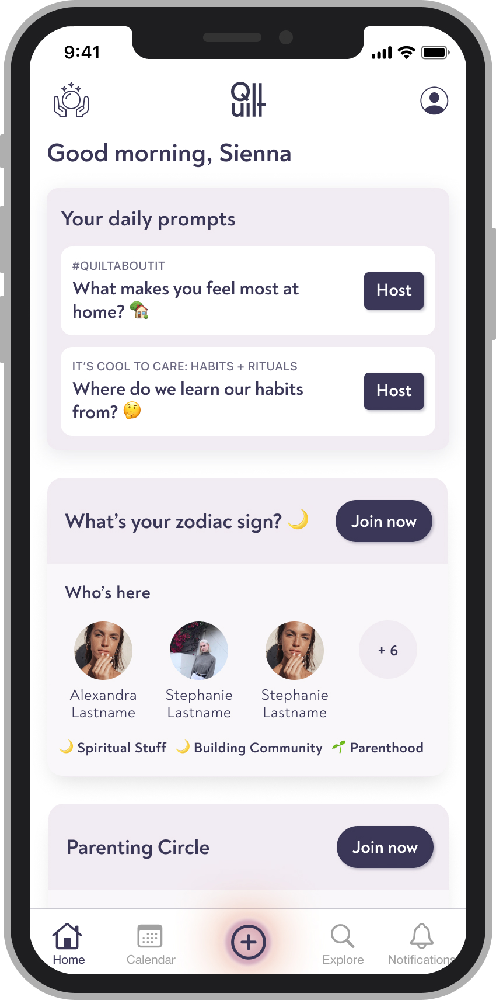

I recently graduated from Carnegie Mellon University, where I studied information systems. While I was there, I made an iPhone app with some friends using Spotify's Web API and iOS SDK.
I previously worked as a product designer at a (now defunct) startup called Quilt. While the Quilt app is no longer available for download, you can see what it looked like in its prime via press coverage from Bustle or TechCrunch.
Beyond the pixels and screens, I like to kayak, watch soccer (or fútbol, if you prefer), and am a member of the National Puzzlers' League. I'm also strongly in favor of the Oxford comma.